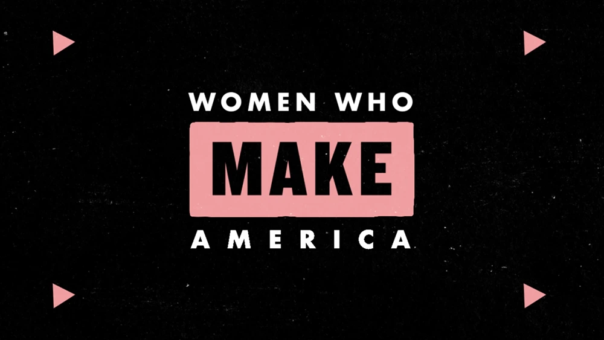

Animation Showcase
Considering that a lot of my work is animated, I needed a way to quickly show people keyframes without making them watch an entire video. My solution was to create a module that let users hover over static images to play GIFs!